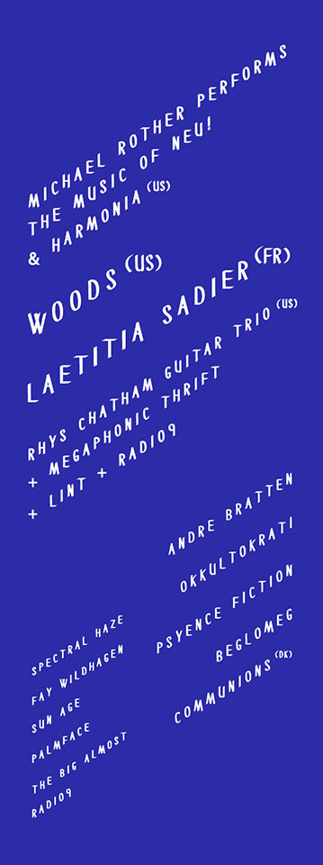

Phonofestivalen 2014 trenger frivillige!
Scroll down for english version
Vi ønsker å ha med deg med til å lage høstens koseligste festival på kvarteret og Landmark Bergen fra 18 til 20 september! Festivalen er i regi av Studentradioen i Bergen, der vi ønsker å profilere radioens musikalske profil, men også det kulturelle og samfunnsrelaterte fokuset. PHONO har sitt fokus på uetablerte artister og kunstnere, og er drevet på frivillig basis.
Hva kan du jobbe som under årets festival?
Vi trenger artistverter, plakatopphengere, kasserere, runnere, dekoratører, «rabalder-team», skribenter, fotografer og sjåfører. Vi trenger også en solskinns-patrulje som skal passe på at alle de frivillige har det bra! Alt du trenger å gjøre er å klikke på linken under for å melde deg opp!
Lenke til søknadsskjema
Hva får du for dette?
Dagspass/ festivalpass. 1 dags arbeid betyr 1 dagspass. 2 dager phono-jobb gir 2 dagsbilletter osv (du kan f.eks jobbe torsdag og fredag og ta med en venn gratis på lørdagen. Enkelt og greit.
- Nye venner på kjøpet! Perfekt for nye studenter, og sosiale folk.
- Verdifull erfaring! Dette er en «hands-on» festival der kun du setter begrensninger for hva du kan lære.
- Attest som beskriver arbeidsoppgavene dine. Å kunne føre opp frivillig arbeid ser alltid flott ut på CVèn, og for de av dere som er over gjennomsnittet interessert i kultur er Phonofestivalen en perfekt dør-åpner inn i bransjen.
- T-skjorte. Vi setter vår ære i å lage fine t-skjorter, slik at dere sitter igjen med et koselig minne fra festivalen.
- Frivilligfest. Dette er vår tur til å gjøre stas på dere. Her vil dere bli feiret til gangs, og kanskje har vi en overraskelse eller to på lur;)
Hva forventer vi av deg?
- At du stiller på jobb som avtalt. Edru.
- At du gir beskjed i god tid om du blir forhindret fra å komme på jobb.Det er desverre et faktum at enkelte frivillige ikke dukker opp til avtalt jobb, og disse vil bli fakturert for festivalpass. Kan du ikke jobbe må du gi skriftlig beskjed senest 7 dager i forveien.
- At du ellers forsøker å yte så god service som mulig da vi er stolterepresentanter for Phonofestivalen og Studentradioen i Bergen!
Jeg gleder meg til å bli kjent med Bergens beste frivillige! Ikke nøl med å ta kontakt, vi finner alltid en plass til deg. Det kan ta noen dager/uker før du får vite hva du skal jobbe som og når du skal jobbe. Vi jobber med å gi deg svar så fort som mulig.
Med Vennlig hilsen
Tobine Branæs Zakariasssen
Frivilligkoordinator
Phonofestivalen 2014
Parkveien 1, 5007 Bergen
frivillig@phonofestivalen.no
Phonofestival 2014 needs volunteers
We want you to be apart of the most amazing festival in Bergen this fall. Which takes place at Kvarteret and Landmark, September 18th – 20th. The festival has its outcome in the local studentradio, Studentradioen i Bergen, and want to show the cultural and musical profile of the radio through this festival. PHONO focuses on new up and coming musicians and artists.
What types of jobs can you do at the Phonofestival?
We need people to host the artists, poster team, runners, decoraters, bartenders, ticket sellers and much more. If this sounds interesting, click the link below and fill out the form to be apart of the social happening that is Phonofestival.
Application form
What's in it for you?
One day of work means that you will get one day free pass at the festival. If you work for two days at the festival you will get a free daypass for yourself and a friend. ( For example: you can work Thursday and Friday, and then take a freind with you to enjoy teh festival on Saturday. Easy peasy)
- New friends. Working at the festival is perfect for new students and those who like to make new friends.
- Valuable experience. This is a "hands on" festival which means that you yourself set the limitations for what you want to learn.
- Rèsumè of your work at the festival will be delivered to you if you want to. This will be something to put on your CV (curriculum vitae ) the festival could also be your introduction into to the cultural scene in Bergen.
- T-shirts. We have made T-shirts which will be given to you under the festival and you will wear these when you work. It is also a cool memorabilia to have when you grow old.
- Volunteer party. We are planning to have a volunteer party aproximately a week after Phono. Here you can continue the relations you made during the festival.
What we are expecting of you:
- We expect that you show up as planned. Sober!
- We expect that you gives us a notice as early as possible if you, for any reason cannot work at the festival. It is sad, but true, that some volunteers don't show up for work as planned. If you use your free pass on Thursday and don't show up for work Friday and/or Saturday, you will be held responsible and asked to pay the full price for a festival pass.
- We expect that you are polite to the guests at the festival, and that you show respect for the rules that has been given to you. We take great pride in the festival and the student radio. NB! You have to let us know within a week if you cant work the the days that has been given to you.
I am looking forward to get to know you all. And don't hesitate to contact me if you have any questions. It can take a few days/weeks before you get to know where and when you will be working. We are working as fast as we can.
Yours sincerely
Tobine Branæs Zakariasssen
Frivilligkoordinator
Phonofestivalen 2014
Parkveien 1, 5007 Bergen
frivillig@phonofestivalen.no